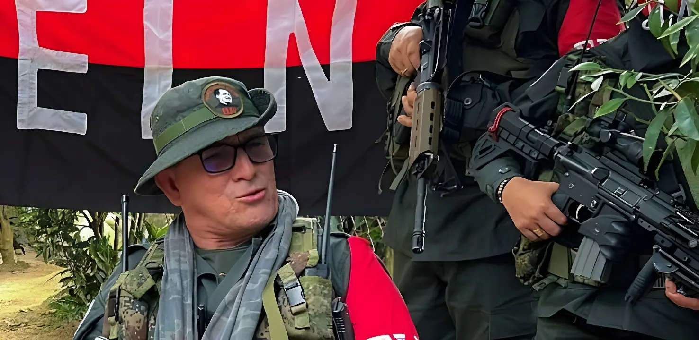

Un mois après avoir durci sa politique sécuritaire — port d'armes, épandage aérien, méga-prisons —, le président colombien Abelardo de la Espriella a formellement mis un terme, le 11 septembre 2026, à la table de dialogue avec la guérilla de l'Armée de libération nationale (ELN) et à l'ensemble des processus hérités de la « paix totale » de Gustavo Petro. Une décision qui clôt quatre années de négociations et ouvre la voie à une doctrine fondée sur la soumission à la justice ou l'action de la force publique.
Le 11 septembre 2026, le président Abelardo de la Espriella a signé la résolution 391 de 2026, révoquant la désignation des représentants du gouvernement à la table de dialogue avec l'Armée de libération nationale (ELN). Cette décision met formellement fin aux négociations engagées par Gustavo Petro dans le cadre de sa politique de « paix totale ». La cheffe négociatrice du gouvernement, Vera Grabe, ancienne sénatrice et ancienne membre du mouvement M-19, ainsi que les autres membres de la délégation — dont le sénateur d'opposition Iván Cepeda, l'ancienne sénatrice María José Pizarro et le dirigeant patronal José Félix Lafaurie — perdent leur mandat de négociateurs.
La même semaine, une résolution distincte, la n° 390 de 2026, a acté la fin des espaces de dialogue avec l'autoproclamée Armée gaïtaniste de Colombie (Clan du Golfe), principale organisation de narcotrafic du pays.
Dans les faits, les pourparlers avec l'ELN étaient interrompus depuis le 17 janvier 2025. Ce jour-là, Gustavo Petro avait suspendu le dialogue après le massacre d'une famille à Tibú (Norte de Santander) — parmi les victimes, un bébé de six mois — et l'assassinat de trois signataires de l'accord de paix de 2016 avec les FARC, dans le cadre d'affrontements entre l'ELN et des dissidences des FARC qui ont fait plus de cent morts et déplacé des dizaines de milliers de familles. Un an plus tôt, le 17 septembre 2024, une attaque de l'ELN contre la base militaire de Puerto Jordán, dans le département d'Arauca, avait déjà fait deux morts et une vingtaine de blessés parmi les militaires et fragilisé durablement la confiance entre les parties.
Au-delà de l'ELN, le gouvernement a mis fin, au moyen d'une douzaine de résolutions, aux espaces de dialogue ouverts avec plusieurs autres structures : les dissidences dites de « Calarcá » (État-major des blocs et fronts), la Coordination nationale Armée bolivarienne, le Front guérillero Comuneros del Sur, les Autodéfenses conquérantes de la Sierra Nevada, ainsi que les espaces socio-juridiques négociés avec des structures criminelles urbaines de Medellín, du Valle de Aburrá, de Quibdó et de Buenaventura. Au total, plus de soixante-dix porte-parole, « gestionnaires de paix » et membres de l'équipe négociatrice du gouvernement précédent ont perdu leur reconnaissance officielle.
Reprise, à Caracas, des dialogues de paix entre le gouvernement de Gustavo Petro et l'ELN.
Attaque de l'ELN contre la base militaire de Puerto Jordán, dans le département d'Arauca.
Massacre de Tibú, dans le Catatumbo ; Gustavo Petro suspend la table de dialogue avec l'ELN.
Investiture d'Abelardo de la Espriella ; annonce de la fin de la politique de « paix totale ».
Résolution 391 : révocation officielle des négociateurs du gouvernement auprès de l'ELN.
Le gouvernement colombien substitue à la négociation une doctrine fondée sur deux issues : la soumission volontaire à la justice pour les combattants souhaitant déposer les armes, sans statut politique ni bénéfice judiciaire particulier, ou l'intervention des forces armées et de la police pour les structures qui poursuivraient leurs activités violentes. Un projet de statut antiterroriste, actuellement en préparation, doit par ailleurs être soumis au Congrès.
« C'en est fini de la fausse paix. »
— Abelardo de la Espriella, président de la Colombie, 11 septembre 2026Fondé en 1964, l'ELN reste, avec environ six décennies d'existence, la plus ancienne guérilla encore active en Amérique latine. Trois tentatives successives de négociation avaient déjà été engagées avec les gouvernements de Juan Manuel Santos (2017-2018), d'Iván Duque et, la plus longue, de Gustavo Petro (2022-2026), sans qu'aucune n'aboutisse à un accord de paix ni à une démobilisation. L'organisation continue de tirer une part de ses ressources du trafic de coca, de l'extraction minière illégale et de l'extorsion dans plusieurs régions frontalières avec le Venezuela.
Avec la clôture de la table ELN, la Colombie referme un cycle de dialogue engagé sous trois présidences successives depuis 2016. Le pari du gouvernement d'Abelardo de la Espriella consiste à miser sur la pression militaire et judiciaire pour obtenir ce que la négociation n'a pas permis d'obtenir : le désarmement d'une guérilla toujours enracinée dans plusieurs territoires. Le test des prochains mois ne se jouera pas dans les résolutions signées à Bogotá, mais dans la capacité de l'État à occuper durablement des zones que quatre années de pourparlers n'ont pas permis de stabiliser.
Un mes después de endurecer su política de seguridad — porte de armas, aspersión aérea, megacárceles —, el presidente colombiano Abelardo de la Espriella formalizó, el 11 de septiembre de 2026, el fin de la mesa de diálogo con la guerrilla del Ejército de Liberación Nacional (ELN) y de todos los procesos heredados de la «paz total» de Gustavo Petro. Una decisión que cierra cuatro años de negociación y abre paso a una doctrina basada en el sometimiento a la justicia o la actuación de la fuerza pública.
El 11 de septiembre de 2026, el presidente Abelardo de la Espriella firmó la resolución 391 de 2026, con la que revocó la designación de los representantes del Gobierno en la mesa de diálogos con el Ejército de Liberación Nacional (ELN). La decisión pone fin formalmente a las negociaciones iniciadas por Gustavo Petro en el marco de su política de «paz total». La jefa negociadora del Gobierno, Vera Grabe, exsenadora y exintegrante del M-19, así como el resto de la delegación —entre ellos el senador opositor Iván Cepeda, la exsenadora María José Pizarro y el dirigente gremial José Félix Lafaurie— pierden su mandato como negociadores.
Esa misma semana, una resolución distinta, la n.º 390 de 2026, oficializó el fin de los espacios de diálogo con el autodenominado Ejército Gaitanista de Colombia (Clan del Golfo), la principal organización de narcotráfico del país.
En la práctica, las conversaciones con el ELN estaban interrumpidas desde el 17 de enero de 2025. Ese día, Gustavo Petro suspendió el diálogo tras la masacre de una familia en Tibú (Norte de Santander) —entre las víctimas, un bebé de seis meses— y el homicidio de tres firmantes del acuerdo de paz de 2016 con las FARC, en el marco de enfrentamientos entre el ELN y disidencias de las FARC que dejaron más de cien muertos y decenas de miles de familias desplazadas. Un año antes, el 17 de septiembre de 2024, un ataque del ELN contra la base militar de Puerto Jordán, en el departamento de Arauca, ya había dejado dos militares muertos y una veintena de heridos, y había debilitado de forma duradera la confianza entre las partes.
Más allá del ELN, el Gobierno puso fin, mediante una docena de resoluciones, a los espacios de diálogo abiertos con otras estructuras: las disidencias de «Calarcá» (Estado Mayor de Bloques y Frentes), la Coordinadora Nacional Ejército Bolivariano, el Frente Guerrillero Comuneros del Sur, las Autodefensas Conquistadoras de la Sierra Nevada, así como los espacios sociojurídicos negociados con estructuras criminales urbanas de Medellín, el Valle de Aburrá, Quibdó y Buenaventura. En total, más de setenta voceros, «gestores de paz» y miembros del equipo negociador del gobierno anterior perdieron su reconocimiento oficial.
Reanudación, en Caracas, de los diálogos de paz entre el Gobierno de Gustavo Petro y el ELN.
Ataque del ELN contra la base militar de Puerto Jordán, en el departamento de Arauca.
Masacre de Tibú, en el Catatumbo; Gustavo Petro suspende la mesa de diálogo con el ELN.
Posesión de Abelardo de la Espriella; anuncio del fin de la política de «paz total».
Resolución 391: revocación oficial de los negociadores del Gobierno ante el ELN.
El Gobierno colombiano sustituye la negociación por una doctrina basada en dos salidas: el sometimiento voluntario a la justicia para los combatientes que deseen dejar las armas, sin estatus político ni beneficios judiciales particulares, o la intervención de las Fuerzas Militares y la Policía para las estructuras que persistan en la actividad violenta. Un proyecto de estatuto antiterrorista, actualmente en preparación, deberá además ser presentado al Congreso.
« Se acabó la falsa paz. »
— Abelardo de la Espriella, presidente de Colombia, 11 de septiembre de 2026Fundado en 1964, el ELN es, con cerca de seis décadas de existencia, la guerrilla activa más antigua de América Latina. Antes de este cierre ya se habían intentado tres procesos de negociación, con los gobiernos de Juan Manuel Santos (2017-2018), Iván Duque y, el más largo, el de Gustavo Petro (2022-2026), sin que ninguno desembocara en un acuerdo de paz ni en una desmovilización. La organización sigue obteniendo parte de sus recursos del narcotráfico, la minería ilegal y la extorsión en varias regiones fronterizas con Venezuela.
Con el cierre de la mesa con el ELN, Colombia da por terminado un ciclo de diálogo iniciado bajo tres presidencias sucesivas desde 2016. La apuesta del Gobierno de Abelardo de la Espriella consiste en confiar en la presión militar y judicial para lograr lo que la negociación no consiguió: el desarme de una guerrilla que sigue arraigada en varios territorios. La prueba de los próximos meses no se jugará en las resoluciones firmadas en Bogotá, sino en la capacidad del Estado para ocupar de forma duradera zonas que cuatro años de conversaciones no lograron estabilizar.